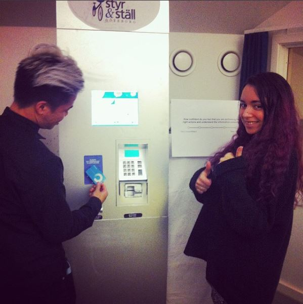

Created a redesign of the Styr-och-Ställ machines’ interface. Styr-och-Ställ is a service for short-term leasing of bikes around town. We performed thorough usability tests of the original interface in a lab environment, analyzed design implications and created a redesign, and then performed the same test on the redesigned interface.
The biggest issue we found was that 90% of the testers thought it was a touchscreen due to problematic placement of navigation buttons. There were also problems in finding the desired functions due to inconsistent interface layout and dead ends. By fixing these problems we could in the second usability test see a significant increase in effectiveness, efficiency and satisfaction.


The project was performed in a team with five other students.
 Next